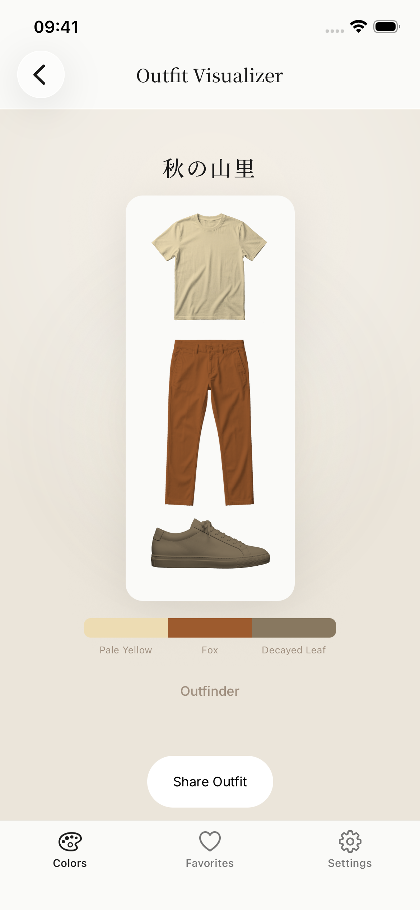
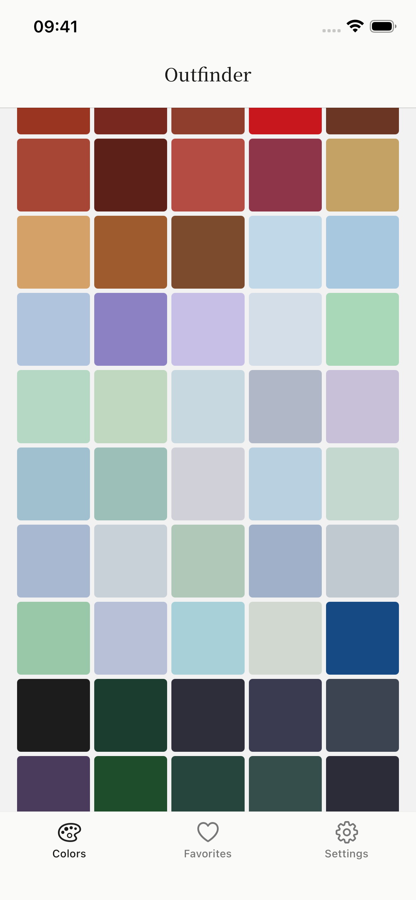
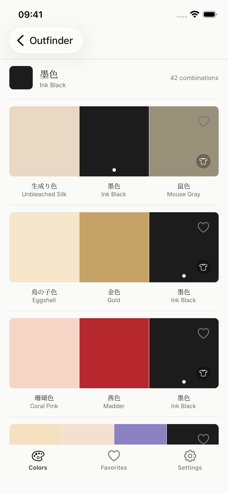

Screenshot 1 — Hero
See your outfit
before you dress
Visualize color-coordinated outfits
using Sanzo Wada's timeless palettes

1 / 3
OUTFINDER
Screenshot 2 — Colors
159 curated colors
From Sanzo Wada's 1934 masterwork
"A Dictionary of Color Combinations"

2 / 3
OUTFINDER
Screenshot 3 — Combinations
348 expert color
combinations
Save favorites, explore palettes,
and dress with confidence

3 / 3
OUTFINDER